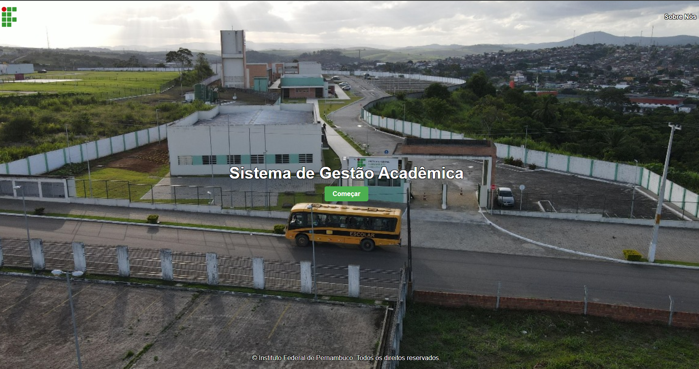

Sistema Gestão de Eventos Acadêmicos
Sistema que tem como principal objetivo facilitar a seleção e participação de alunos e servidores em eventos acadêmicos, como projetos de pesquisa e extensão, viagens pedagógicas, entre outras.
- Backend - Java/SpringBoot;
- Banco - Mysql;
- Frontend - HTML, CSS, JS.
Feito com as seguintes tecnologias: